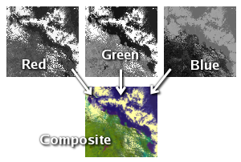
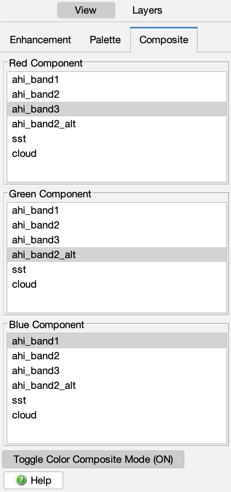

In this section:
A composite image is a way of displaying the data from three separate data variables in a single color image. The red, green, and blue components of each pixel color are derived from one of the three data variables in the composite. This method is different from the standard color enhancement in which pixel colors are derived from a single data variable and a color palette. The following figure shows an example of three separate data variables being combined into one image:

These images are often referred to as false color images.
The following figure shows the composite controls:

Any data variable from the list of imported variables may be used in the composite. Each variable is independently enhanced using its range and function from the enhancement controls (see the enhancement section for details). The enhancement palette is ignored in order to create the composite.
Click the button to put CDAT into composite mode. You can still use the other control tabs while in composite mode to add data overlays, annotation layers, etc. Changes in the enhancement range and function of any variable are reflected in the composite — you may want to adjust the enhancement sliders to get the right mix of red, green, and blue components.